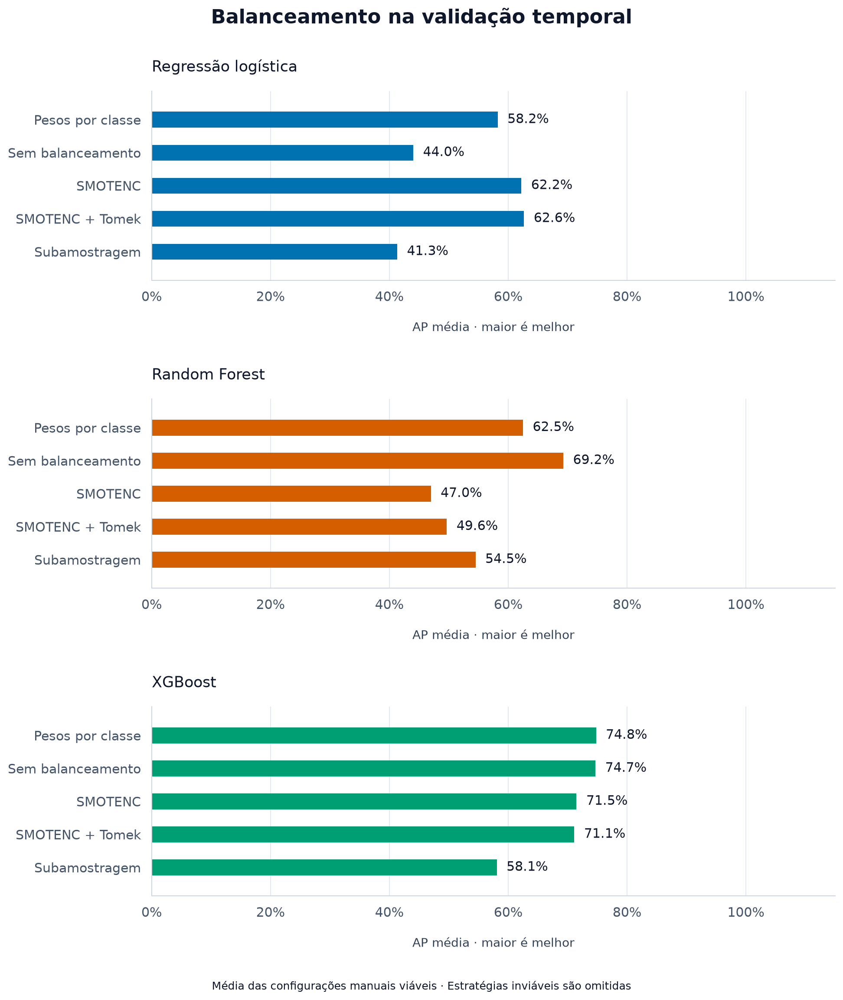
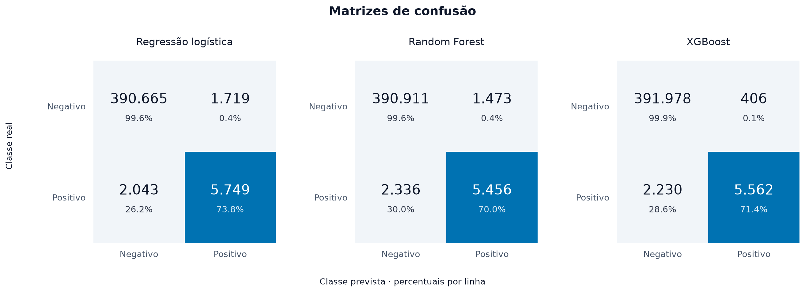
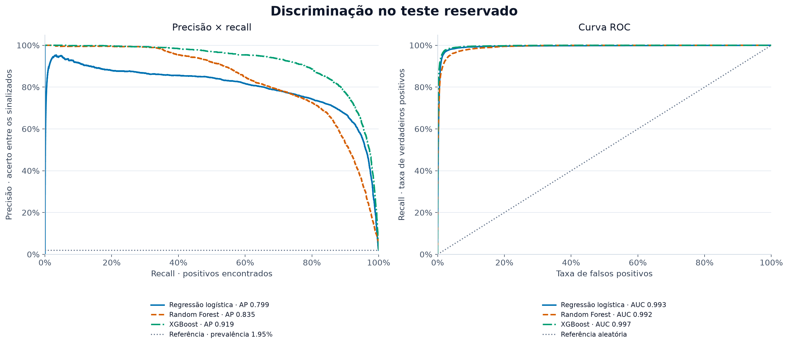

Campeão escolhido exclusivamente pela AP da validação temporal: xgboost. Limiar escolhido por F1 no período de calibração. O teste é descritivo. Escores não são probabilidades calibradas. Os cenários têm alvos diferentes; valores sinalizados não demonstram dinheiro efetivamente protegido.


